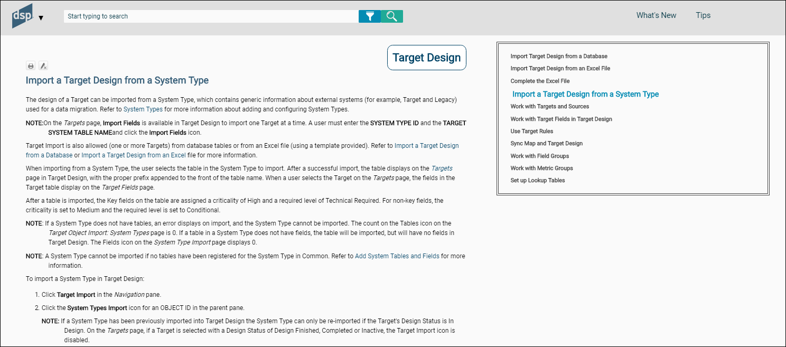
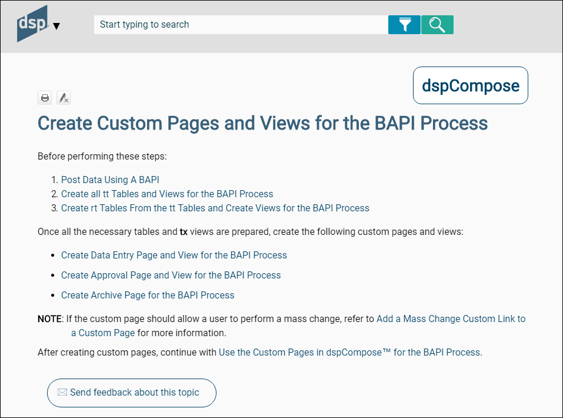

SST Use Case Guidelines
Application of Styles
When applying a style in Flare, it may be necessary to clear a style or remove attributes from a style so that text is formatted correctly. Clear the style by highlighting the text (click the style block in the XML Editor), and then on the Home tab, in the Font group, click the Unformat icon.
h1
All topics start with an h1 style.
h2
Format the title of sections in topics in h2.
h3
Use h3 when sub sections within a topic need a heading.
p
Use the p (paragraph) style for text that is not in a table, is not bulleted or numbered, and is not a note.
Bullets
Use bullets to present a list of information.
Use the Bullets option in Flare for bulleted lists.
Bulleted lists must include at least two items and have a parallel structure. Refer to List Boxes in Use Cases for more information.
Numbered Steps
Use numbered steps when describing a detailed, sequential process. Refer to Use of Numbered Steps in Use Cases for more information.
Tables
Use the Table Column style for the first row and the left column in all tables. Use Table Text for all other columns.
Apply the fielddescripion stylesheet to field description tables to set column width and grid lines.
Refer to Format Tables in the Syniti Documentation Process document for more information.
Use the Table Note style for adding notes to tables.
NOTE
Use the p.note style for notes included in paragraphs.
To add a note in numbered steps, make the note a paragraph item (CTRL+;). Apply a p.note style. Refer to Use of Numbered Steps in Use Cases for more information.
Bold the colon after the word NOTE:
Character Styles
Italics
In use cases, use italics for:
- Page names (e.g., the Targets page)
- Vertical View (unless referring to the clickable icon)
- Horizontal View
- Navigation pane
- Manual titles (e.g., Syniti Solutions Installation and Upgrade Guide)
- The link to field descriptions in steps View the field descriptions for the Targets page)
Bold
Use bold for:
- Options in list boxes. Refer to List Boxes in Use Cases for more information.
- Vertical View when it is being described as a clickable icon.
- Use bold if specific text is entered in a field in numbered steps. For example, Enter MM01 in the TARGET TABLE field.
- The word NOTE:
- The names of UI elements in steps. For example: Select an option in the TABLE NAME list box.
- Punctuation that follows bolded text, as in NOTE:.
NOTE: Do not bold the names of UI elements (icons, etc.) outside of steps except when you are making an imperative statement (whether inside or outside of a step). An imperative statement is Click the XXX icon. Select Xxxx from the listbox).
References to Page Descriptions
In use case steps, include a link to a page description after the Click Add or Click Edit step. Italicize the reference and do not use a period. For example:
View the field descriptions for the Targets page
Add an external hyperlink to this text that is linked to the Page descriptions page.
NOTE: All hyperlinks are external links and must contain the following code:
target="_blank" rel="noopener noreferrer"
References to Other Use Cases
Use the following standard text:
Refer to [Use case name] for more information.
Add references as relevant to avoid repeating content and to ensure consistency in information.
Simple Use Case Structure and Content
A simple use case can be described in one topic.
The heading text is the name of the use case topic. The name begins with a verb, for example, Add a Template to a Process.
The use case answers the following questions:
- Who: Who (i.e., what type of user such as Administrator or Business user) performs the use case.
- What: What is accomplished with this use case.
- Why: Why does the user perform this task. Is it a configuration task? Does it cause data to display on a report? Does it allow other tasks to be performed?
- How: How is the task performed (i.e., what are the steps)?
A use case defines any unfamiliar terms as needed. If these terms are used throughout help, add a glossary entry for them.
Navigation in ADM steps
-
Write the steps with the assumption that the user is already working in ADM.
-
Use this format for the line above the steps:
To [perform an action] in Map: -
Do not include the component name in the Navigation steps, e.g., perform an action:
Click Map > XXX.
Simple Use Case Examples

Complex Use Case Structure
A complex use case spans multiple topics or includes all sections in one topic with a hyperlinked list linked to bookmarks in the topic, and describes a set of subtasks that must be performed to accomplish the overall goal of the complex use case. These subtasks may or may not have to be performed in order.
The first topic in the complex use case provides an overview of the complex use case with links to subtasks. either in separate topics if there are over 7, or in the same topic if there are under 7 subtasks.
Each subtask in a complex use case contains the same content as a simple use case (as in, the who, what, why, and how).
Additionally, make the order of subtasks or the relationship of subtasks in the complex use case clear using prerequisites and next steps.
Prerequisites and Next Steps
Use Prerequisites and Next steps in complex use cases when these use cases are spread across multiple topics.
Prerequisites are use cases that must be performed before the current use case can be completed. Describe these prerequisites at the topic's start.
If applicable, a use case topic includes links to next steps, which are the task(s) performed after the current use case. Include the next steps at the end of the topic.
If the complex use case is in one topics, add the Continue with text, but leave out the prerequisite text.
An example:

The following is an example of the introductory topic for a complex use case.

Numbered Steps in Use Cases
- Use numbered steps when describing a sequential process.
- Include at least two steps.
- Define one action in each numbered step (if the word and is used, it can probably be another step).
- Begin all numbered steps with a present tense action verb.
- Precede each set of numbered steps with a line that explains what the steps accomplish. Start this line with the word To and end with a colon.
- Use the p (paragraph) for the To line.
- Use lower-alpha list steps within numbered steps if needed. For example:
1.
a.
b.
2.
List Boxes in Use Cases
Begin a step that describes a list box with the words Select a [name of field] to . . .
When describing list boxes, follow the step with the text: Values are: Insert a bulleted list with each value as a separate bullet. Bold the value name. Follow it with an em dash. The shortcut for em dash is Alt+0151. The numbers must be typed on the numeric keypad. Follow the em dash with the value;s definition. Do not add spaces on either side of the em dash.
For example:
Select a role from the Role ID list box. Options are:
- Value 1—Description 1
- Value 2—Description 2
Define each list box value.
Do not bold list box names outside of steps, except when used in the imperative (click the XXX list box to select a value.) Follow the list box name with the words list box.
Text Boxes in Use Cases
Begin a step that describes a text box field that allows data entry with Enter the value. . .or Enter text. .
Do not bold text box names outside of steps, unless used in an imperative statement. Follow the text box name with the word field.
For example:
Enter a unique name in the Customer Name field.
Check Boxes in Use Cases
Write a step describing a check box as Click the [check box name] to check it. . . then provide additional information about what enabling the feature does. Provide information about what disabling the feature does too, if necessary.
Do not bold check box names outside of steps, unless used in an imperative statement. Follow the check box name with the words check box.
Use check and uncheck not enable and disable.
Menu Navigation in Use Cases
When writing steps, use this standard to describe access to items on a menu:
Select Configuration > Data Sources in the Navigation pane.
Icons in Use Cases
In steps, use:
Click the [icon name] icon
instead of only the icon name.
For example:
Click the Tables icon.
Not
Click Tables.
NOTE: the Vertical View icon is referred to as Vertical View, without an definitive article or the word icon.